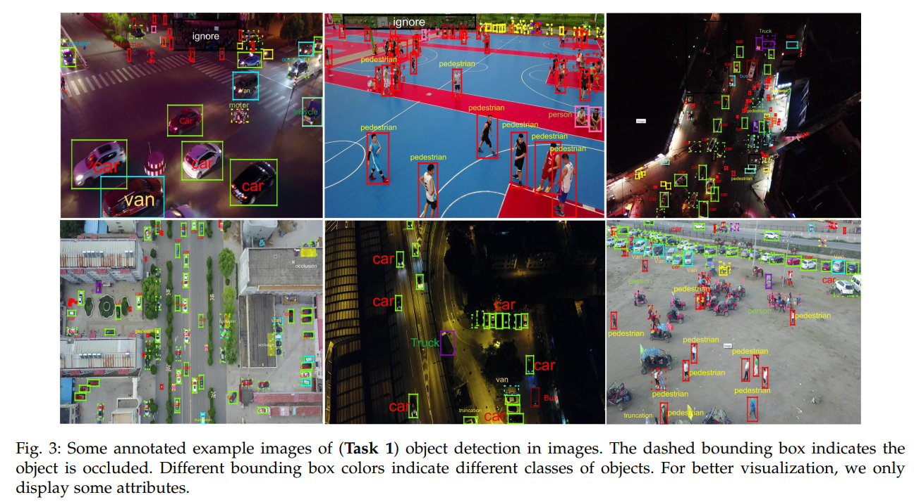
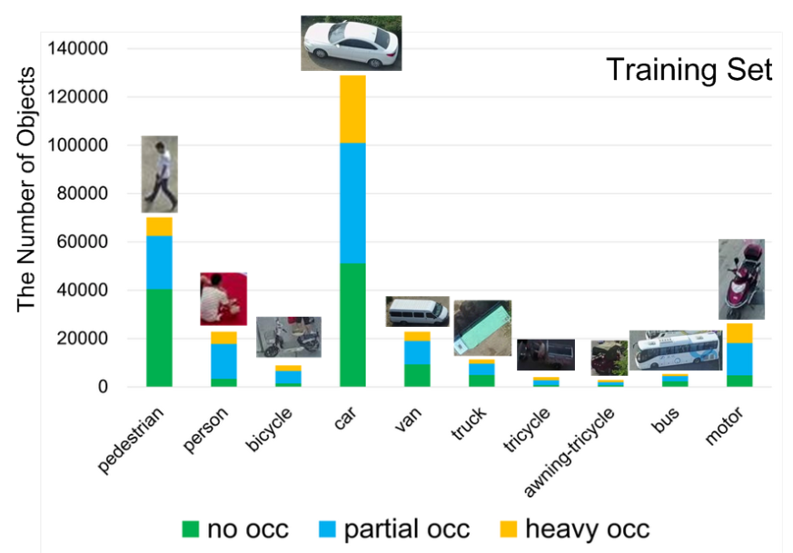
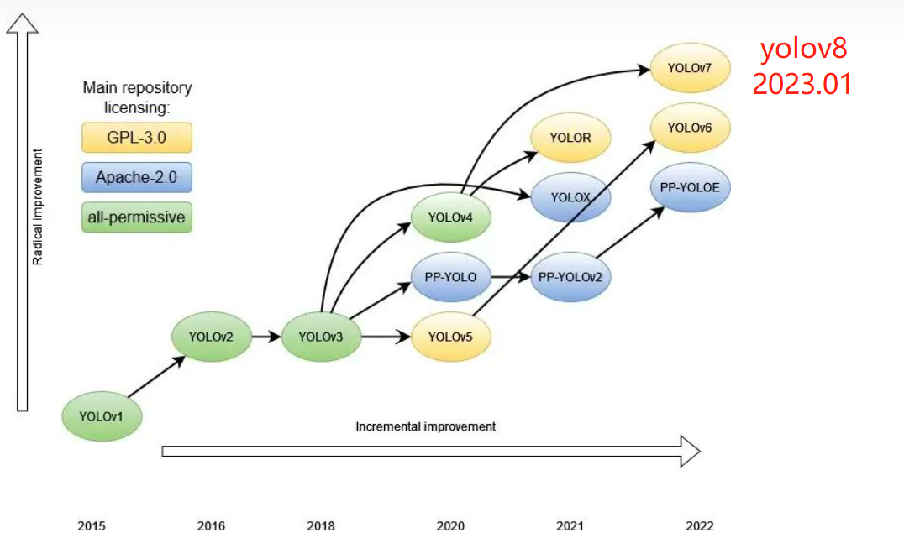
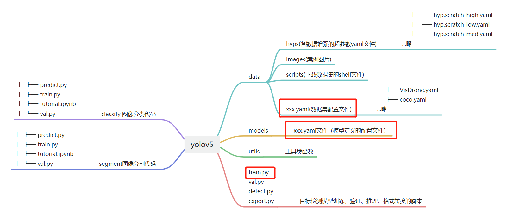
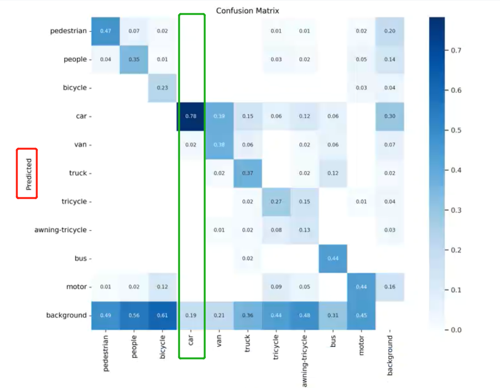
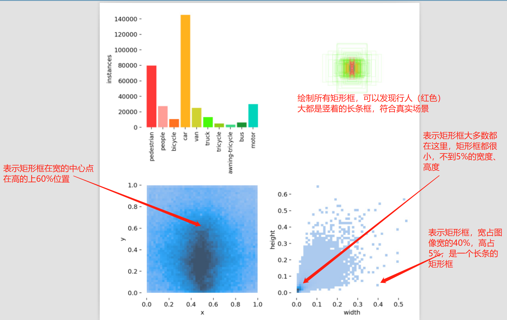
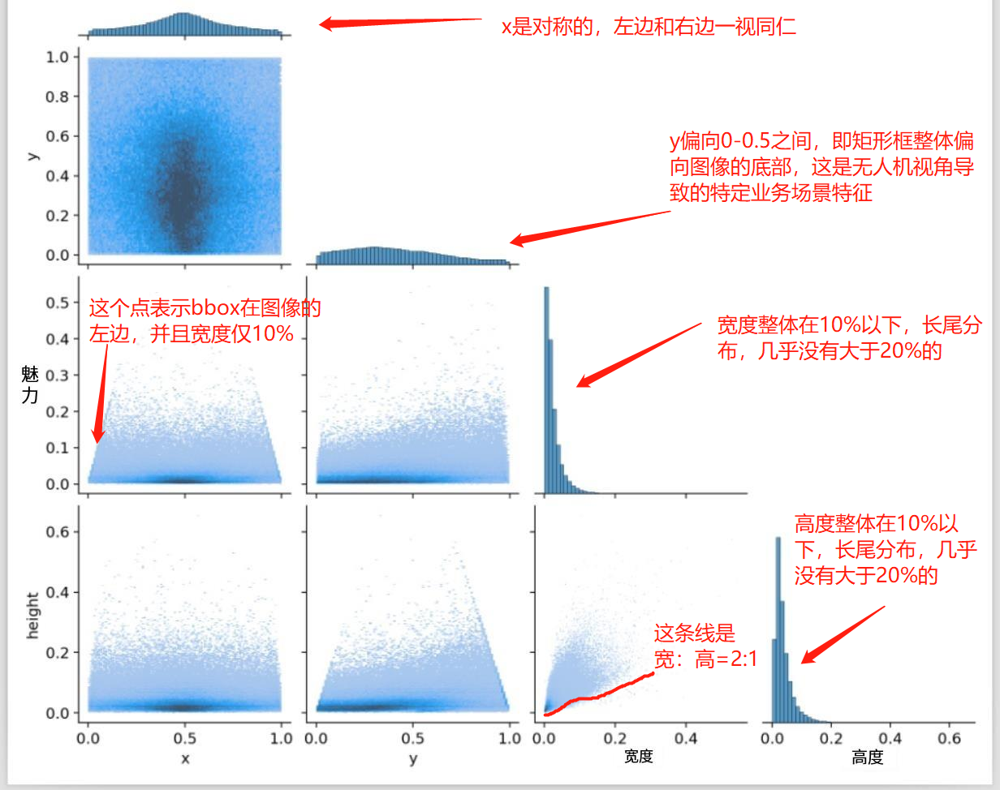
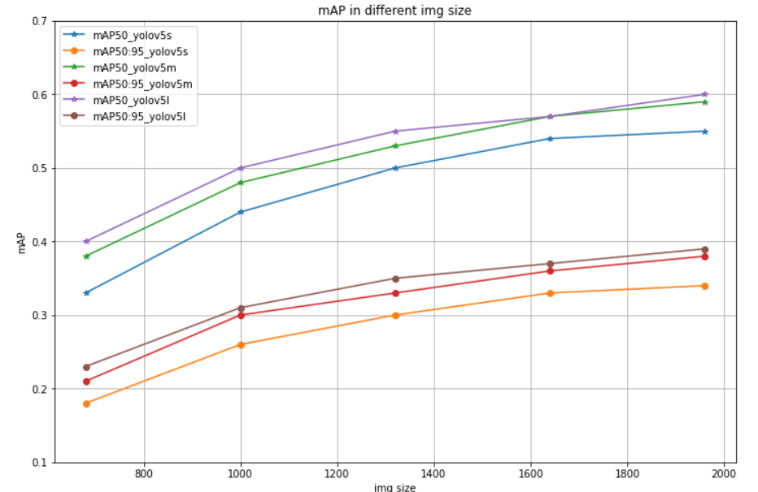

8.3 目标检测——无人机检测

前言
目标检测在工业界应用广泛，例如工业生产线上的质量检测、监控工业场景中的安全问题、机器人的自主导航等，可以提高生产效率和产品质量，降低生产成本，也可以提高工作环境的安全性，减少事故发生，由此可见目标检测意义重大。
本小节，将介绍工业界中的热宠YOLOv5，并通过无人机场景检测任务进行实现。
本小节内容丰富，包括：
VisDrone数据集介绍
目标检测常见数据格式介绍：VoC, COCO， YOLO
YOLOv1-YOLOv8 概述：了解YOLO发展历史，各版本模型优点，缺点
YOLOv5 源代码结构剖析及使用步骤：了解优秀的项目代码结构，设计
YOLOv5在VisDrone数据集上的多组实验，了解不同容量的YOLOv5能力
数据模块
VisDrone数据集介绍

VisDrone数据集是一个大规模的用于视觉目标检测、跟踪和计数等任务的数据集，由天津大学整理于2018年发布，论文为Vision Meets Drones: A Challenge，可通过github下载。
其中包含多个任务，这里采用VisDrone-DET数据集，进行目标检测案例学习，VisDrone-DET也就是VisDrone2018。
VisDrone-DET中，总共包含10209张，划分为了4个数据集，额外给出了一个1610张模拟的测试集-dev，训练集6471张，验证集548张，测试集-dev1610张，测试集-challenge 1580张。
数据特点：图片分辨率较大、目标小、目标存在一定程度遮挡，部分是严重遮挡（例如汽车）。

下面介绍数据集目录组织形式与标签含义。
数据包含annotations和images两个文件夹，分别存储标注信息txt文件，图片jpg文件，文件名保持一致。
标签txt文件中，一行表示一个标注框，一行有8个信息，例如
495,473,120,46,1,4,0,1
507,447,107,38,1,4,0,1
分别表示：
<bbox_left>,<bbox_top>,<bbox_width>,<bbox_height>,<score>,<object_category>,<truncation>,<occlusion>
- bbox：前四个为bbox信息；
- score：表示标注框的置信度，取值为0或1，0表示忽略，1表示可用。
- object_category： 目标类别，0-11，分别是，gnored regions(0), pedestrian(1), people(2), bicycle(3), car(4), van(5), truck(6), tricycle(7), awning-tricycle(8), bus(9), motor(10), others(11)
- truncation：截断程度，取值为0,1。0表示无截断，1表示目标有1%~50%的区域再当前帧(图像)之外。
- occlusion：遮挡程度，0-2。0表示无遮挡，1表示1%-50%遮挡，2表示50%-100%遮挡。
对于本案例使用，仅需要剔除score=0的bbox。
目标检测数据集格式
了解数据之后，需要把数据集转换为代码可以接收的形式。与分类分割任务不同，目标检测领域的数据格式相对固定，一般不需要自己重写数据加载模块，而是跟随代码框架的要求来适配。
目标检测目前主流的有三种格式，VOC格式、COCO格式、YOLO格式，下面分别介绍。
VOC数据集格式如下：
图像位于JPEGImages文件夹。
标注文件位于Annotations文件夹中，标注文件与图像文件文件名应当相同，并且XML格式描述目标的位置和类别等信息，bbox形式为xmin、xmax、ymin、ymax。
COCO数据集格式如下：
图像位于images文件夹中。
标注文件位于annotations文件夹下的instances_train2017.json，所有标注均存储在一个json中，并通过特定字段获取图片对应的标签信息。bbox形式为xmin, ymin, w, h。
YOLO数据格式如下：
图像位于images文件夹下。
标注文件位于labels文件夹下，标注文件与图像文件文件名应当相同，并且以txt文件存储标签信息。txt中一行是一个标注框，一行的格式为：
class x_center y_center width height，其中bbox的数值需要除以长/宽，使得值为0-1之间。
在这里侧面证明了YOLO模型的强大，以往算法开发要适应数据集的格式，而现在yolo系列模型被广泛使用，使得大家愿意接受YOLO数据格式。
标签数据转换代码
在目标检测任务开发过程中，无法避免数据集之间的转换，这里推荐repo，可以实现三种数据格式之间的互相转换。
在本案例中，适合自行编写脚本进行转换，这里yolov5官方也给出了代码，因此直接复用即可。
推荐yolov5中使用的几个小函数：
- 文件夹的创建， Path对象可直接.mkdir()，并且可设置递归及判断存在与否。
from pathlib import Path
(dir / 'labels').mkdir(parents=True, exist_ok=True) # make labels directory
pbar显示进度， 将可迭代对象用tqdm包一下，并且设置打印的字符串信息格式desc
pbar = tqdm((dir / 'annotations').glob('*.txt'), desc=f'Converting {dir}')
使用配套代码，运行即可得到与images文件夹在同级目录下的labels文件夹
python visdrone2yolo.py --data-path /mnt/chapter-8/data/visdrone
到这里yolo格式数据集已经准备好，如何在代码中使用及配置，这部分放到模型模块中的yolo框架讲解部分。
模型模块
在数据模块，讲解了目标检测中数据集常见的格式，并且已经转换称为yolo格式，等待使用。
若是在分类或分割中，我们会手写代码进行实验，然而在目标检测，绝大多数是不需要的，原因有
- 目标检测中涉及多个模块，重新造轮子的时间成本高，容易出bug；
- 目标检测可用成熟的“框架”（可用的repo）很多，如ultralytics的yolov3/yolov5/yolov8，mmdetection，paddledetction等，感谢前人的工作！
- 成熟的"框架"指，功能齐全，满足绝大多数场景，受众多，经得起时间的考验，可以放心使用。
在图像分割的实验中就指出，凡是有系列的，优先考虑，因此，这里选择ultralytics的yolov5，它是目前为止（2023年3月10日07:07:25）star最高的目标检测开源代码仓库，已经36K，足以证明yolov5的稳定性与可靠性。
yolo系列简介
| YOLOv1 | YOLOv2 | YOLOv3 | YOLOv4 | YOLOv5 | YOLOv6 | YOLOv7 | YOLOv8 | |
|---|---|---|---|---|---|---|---|---|
| 时间 | 2015.6.8 | 2016.12.25 | 2018.4.8 | 2020.4.23 | 2020.6.10 | 2022.6.23 | 2022.7.7 | 2023.1 |
| 作者 | Joseph Redmon | Joseph Redmon | Joseph Redmon | Alexey Bochkovskiy | Ultralytics | 美团 | Alexey Bochkovskiy | Ultralytics |
深度学习目标检测框架发展快10年时间，只有yolo（You Only Look Once）系列久经不衰，截至目前公认的版本已经到了v8，很难有人能将v1-v8的细节全部吃透。
在校有时间的同学十分建议从v1-v8认真学习，这样可以理解目标检测的发展，锻炼科研意识，掌握代码能力。
对于工作繁忙的工程师来说，它们只是解决问题的工具，了解工具的优点与缺点，有的放矢的应用在各个项目场景也是不错的选择。
为此，特地总结yolov1-v8的特点，为后续使用工具打下基础。
参考deephub的文章，可以看到yolo系列主流的模型发展历程。

yolov1：2015年提出的one-stage目标检测算法，与当时的Fater RCNN（two-stage）共同称为当时最受欢迎的检测模型。特点为anchor-free：没有anchor的概念，每个cell直接输出bbox。每个cell仅输出2个bbox，每个cell输出向量为（20+ (4+1)*2），20为20个类，1为bbox概率，4为bbox信息，一张图片最终变为7×7的特征图，一个cell只能预测1个类，因此定位粗糙，小目标不友好，对重叠物体检测能力差。
yolov2：针对yolov1定位不精准问题，借鉴faster rcnn的anchor-base的概念，并且引入k-means实现anchor的自动配置。
yolov3：划时代意义的目标检测算法，也奠定了目标检测之后的范式，backone+neck+多尺度。yolov3网路结构简单，并且采用多尺度特征图实现不同尺寸目标的检测，速度与精度在当时都是优于其他模型。yolov3采用的是手动配置的33=9种anchor，anchor的参数设置是通过k-means对标签进行聚类发现的，*3种尺寸，3种长宽比。
yolov4：yolov4发布前有个小插曲，那就是YOLO之父Jeseph Redmon，由于“无法忽视工作带来的负面影响”，公开宣布隐退。好在有大神接了他的大旗，在yolov3推出快2年的时间，yolov3的改进版v4终于在2020年来了，yolov4开始，可以认为是一个分割点，更准确地说yolov3是后续模型的分割点。借助paperswithcode的一个精度图，可以看到yolov3在coco的map是30-40之间，而往后v4-v8已经来到50-60的区间，已经不在一个档次。
对于yolov4，它对当时深度学习的多种tricks进行了实验，集成到yolov3上进行改进，精度和速度都得到大幅度提升。它使用了大量tricks，包括WRC、CSP、CmBN、SAT、 Mish activation、Mosaic data augmentation、CutMix、CmBN、DropBlock regularization 和 CIoU loss、GIoU loss。
yolov5：在yolov4发布后短短2个月，yolov5横空出世，并且带来了多种大小的模型, nano/s/m/l/x等尺寸，可适用于多种场景，同时配备高质量的开源代码仓库，短时间内就受到了广泛关注。yolov5数据增强上使用了Mosaic数据增强、自适应锚框计算、自适应图片缩放（推理时采用最小填充原则，加速推理）、融合新网络模块Focus、CSP结、FPN+PAN，GIOU_Loss，以及预测框筛选的DIOU_nms、
yolov6：2022年由美团提出的速度更快的检测模型，主打是速度，因此模型特点是backbone与neck的设计都为了适应硬件的运算，使用了Rep-Pan和EfficientRep块，head部分用了解耦的形式，在训练策略方面采用了anchor-free、SimOTA标记策略、SIoU盒回归的损失。
yolov7：在yolov6推出不到半个月，yolov7也发布了，yolov7团队与yolov4团队一致，属于官方YOLO团队（yolov4团队接过yolo之父Jeseph Redmon的大旗）。yolov7同样从速度方面做了许多优化，例如内存访问成本、I / O比率、element-wise、激活函数等，以及模型重参数化（re-parameterization）。
yolov8：yolov5的团队——ultralytics打造的集成图像分类、图像分割、目标检测于一体的结构，目前github地址并为采用yolov8而是采用ultralytics。发布2个多月后，论文仍旧未发布，具体优化内容请关注官方github，从代码中观察吧。
yolov5 代码结构讲解
根据广大工程师“用脚投票”的结果，本案例采用ultralytics的yolov5来实现目标检测，并学习代码中优秀的设计思想，同时剖析用户如何使用yolov5仓库代码。
后续建议跟进yolov8!
学习yolov5之前，推荐阅读yolov5的readme，其中包含了许多学习资料。
下图为yolov5(2023.03版)的代码结构，逻辑相当清晰，可分三个模块，三个模块是图像分类、图像分割和目标检测。
目标检测分为data、models、utils和运行脚本部分。
- data：存放的主要是数据超参数配置yaml文件。
- models：存放的是各模型的yaml配置文件，即模型创建依赖于yaml文件。
- utils：存放各功能模块，如，数据增强augmentations.py， 自动计算anchor功能autoanchor.py，激活函数activations.py， fastapi接口等等。
检测模型的训练、验证、推理分别在：train.py, val.py, detect.py中。下面将重点讲解train.py的运行机制。

yolov5 训练机制讲解
train.py有600多行，并且调用了许多函数，一开始接触会感到困难。
不过不用担心，它还是pytorch框架，仍旧逃离不了基础核心模块， dataloader， module，loss， scheduler，迭代训练。
下面依次简要的说明train.py中是如何训练的。
参数配置模块
使用parse_opt()进行参数包装，训练时可指定模型、数据集配置yaml路径，超参数配置yaml路径等内容。
数据模块
man() --> train()-->create_dataloader(): 第188行，调用了create_dataloader()函数，并且传入了数据集配置yaml文件中的训练集路径。
utils/dataloders.py-->LoadImagesAndLabels(): 在函数内部采用LoadImagesAndLabels()类实现pytorch的dataset的生成，class LoadImagesAndLabels(Dataset), 代码有483行，里面实现了许多数据检测、数据加载功能，但是核心与pytorch的dataset是一致的，重点关注init中做了哪些初始化，以及getitem如何从磁盘加载图片并且做数据预处理、数据增强的即可。
模型模块
第125行实现模型创建，可以看到是通过配置信息进行创建的，这里的配置信息来自参数配置模块中--cfg或者指定预训练模型--weights，
model = Model(cfg or ckpt['model'].yaml, ch=3, nc=nc, anchors=hyp.get('anchors')).to(device) # create
再看往里看 DetectionModel继承自BaseModel，BaseModel集成nn.Module，里边细节就可通过nn.Module的基础知识一步一步剖析。
迭代训练模块
核心功能在，262行
262行：主循环
for epoch in range(start_epoch, epochs): # epoch ------------------------------------------------------------------
284行：batch循环
for i, (imgs, targets, paths, _) in pbar: # batch -------------------------------------------------------------
310行：前向推理，计算loss，反向传播
pred = model(imgs) # forward
loss, loss_items = compute_loss(pred, targets.to(device)) # loss scaled by batch_size
scaler.scale(loss).backward()
344行：epoch维度变更学习率，因此在batch的循环之外
lr = [x['lr'] for x in optimizer.param_groups] # for loggers
scheduler.step()
日志输出模块
在runs文件夹下会有train文件夹，每一次实验会以exp{实验次序}创建文件夹，在下面会保存训练过程中的一系列有价值内容。
如下图所示，会有这些文件
weights：训练好的模型权重，包括last.pt, best.pt
hyp.yaml：训练时的超参数，便于复现
results.png：训练曲线，便于分析训练情况，调整超参数
results.csv：训练指标记录表格
train_batch2.jpg：训练数据集，bbox绘制情况，十分有用，可用于检测数据标签是否处理正确！
val_batch0_labels.jpg：验证数据集，bbox验证情况
val_batch2_pred.jpg：模型预测出的bbox在验证集上的情况。
混淆矩阵：针对标签的预测的情况进行混淆矩阵观察，这个混淆矩阵是转置了的，行是预测，列才是真实标签，以下图为例，汽车这个类别中，有78%的汽车框被预测为了汽车，有19%的汽车框没有被检测到，剩下2%的汽车框被检测出来了，但是分类时分为了van（箱式货柜车）。

PR_curve：PR曲线是各类别的AP情况

P_curve和R_curve：是观察模型对各类别分类情况，可用于挑选分类概率阈值， 横轴表示选择的阈值，纵轴是对应的值。可以看到阈值越小召回率越高，反之，精确度越低。

labels_correlogram.jpg：是借助seaborn的pairplot，绘制的多变量的二维分析相关性统计分析图。以列为基础，第一列是x与其它数据的关系，第一列，第一行，表示x的整体分布，可以看到是相对于中心点0.5对称的，表明矩形框在宽这个维度，左边有的数量与右边有的数量是一致的，并且呈现中间多，两边少的情况。
第一列，第二行，表示x与y的分布情况，同labels.jpg中第三幅图一样，观察矩形框整体情况是宽度偏中间，高度偏中间与中下部。
第一列，第三行，表示x与w的分布情况，呈现一个梯形，这个很合理，因为当x靠近图片的最左边的时候，即物体在图像的边界时，这个物体一般不会很大，否则根据拍照的基础原理，肯定会将镜头朝向主要物体，并放置在镜头中央，不至于在边界处。
第一列，第四行，表示x与h的分布情况。
第二列，第二行，是y的整体分布，可以看到是偏向0-0.5之间。
第三列，第三行，是w的整体分布。
第四列，第四行，是h的整体分布。

yolov5 训练VisDrone步骤
第一步：设置数据集配置yaml文件，首先到detection\yolov5-master\data\下复制一份yaml，命名为mydrone.yaml，设置好路径即可，这里yolo数据格式只需要images路径就能通过相对路径寻找到labels。同时设置好检测类别数量与名称
path: G:\deep_learning_data\VisDrone # dataset root dir
train: VisDrone2019-DET-train\\images # train images (relative to 'path') 128 images
val: VisDrone2019-DET-val\\images # val images (relative to 'path') 128 images
test: # test images (optional)
nc: 10 # number of classes
names: ['pedestrian', 'people', 'bicycle', 'car', 'van', 'truck', 'tricycle', 'awning-tricycle', 'bus', 'motor']
第二步：将预训练模型下载到code/chapter-8/03_detection/yolov5-master下，下载方式为github。
第三步：在终端，运行训练指令，即可在runs/train下面看到对应日志.
python train.py --imgsz 640 --batch 16 --epochs 100 --data mydrone.yaml --weights yolov5s.pt --workers 8
对比实验
实验一：visdrone数据集特点是分辨率大，一般的640,1000的尺寸无法满足要求，为此，进行了5种尺寸的训练，用于观察不同分辨率对精度的影响
实验二：yolov5提供多种尺寸的模型，这里观察s/m/l三种尺寸的模型对精度的影响。
实验三：同时观察yolov5自带的三种不同强度的数据增强带来怎样的精度变化。
更新：所有实验权重、实验文件已经上传云盘：链接：https://pan.baidu.com/s/11kQJcCka2VyR5ToF-N0BOQ 提取码：op4x
实验一/二：不同输入尺寸对模型精度的变化
python train.py --imgsz 640 --batch 24 --epochs 100 --data mydrone.yaml --weights yolov5s.pt --workers 8 --hyp data/hyps/hyp.scratch-low.yaml
python train.py --imgsz 960 --batch 16 --epochs 100 --data mydrone.yaml --weights yolov5s.pt --workers 8 --hyp data/hyps/hyp.scratch-low.yaml
python train.py --imgsz 1280 --batch 12 --epochs 100 --data mydrone.yaml --weights yolov5s.pt --workers 8 --hyp data/hyps/hyp.scratch-low.yaml
python train.py --imgsz 1600 --batch 8 --epochs 100 --data mydrone.yaml --weights yolov5s.pt --workers 8 --hyp data/hyps/hyp.scratch-low.yaml
python train.py --imgsz 1920 --batch 6 --epochs 100 --data mydrone.yaml --weights yolov5s.pt --workers 8 --hyp data/hyps/hyp.scratch-low.yaml
| map50/map50:95 | 640 | 960 | 1280 | 1600 | 1920 | |
|---|---|---|---|---|---|---|
| yolov5s | 0.33/0.18 | 0.44/0.26 | 0.50/0.30 | 0.54/0.33 | 0.55/0.34 | exp0-4 |
| yolov5m | 0.38/0.21 | 0.48/0.30 | 0.53/0.33 | 0.57/0.36 | 0.59/0.38 | exp11-15 |
| yolov5l | 0.40/0.23 | 0.50/0.31 | 0.55/0.35 | 0.57/0.37 | 0.60/0.39 | exp16-20 |

从上图可以看出：
- 随着尺寸增大，精度得到提高，且1920仍未达到瓶颈，可继续增加图片尺寸来获得精度提高。
- 随着模型容量增大，精度得到提高；可根据任务难以程度选择合适容量的模型。
- 在size和模型容量两者间可以选择更适合的方式来涨点，即size也可以涨点，换大模型也可以涨点，如果不能同时采用，则根据上下游条件进行取舍。
实验三：不同数据增强方法的变化
这里套用yolov5提供的三种强度的数据增强方法，观察精度变化。
python train.py --imgsz 960 --batch 16 --epochs 100 --data mydrone.yaml --weights yolov5s.pt --workers 8 --hyp data/hyps/hyp.scratch-low.yaml
python train.py --imgsz 960 --batch 16 --epochs 100 --data mydrone.yaml --weights yolov5s.pt --workers 8 --hyp data/hyps/hyp.scratch-med.yaml
python train.py --imgsz 960 --batch 16 --epochs 100 --data mydrone.yaml --weights yolov5s.pt --workers 8 --hyp data/hyps/hyp.scratch-high.yaml
| scratch-low | scratch-med | scratch-high | ||
|---|---|---|---|---|
| map50/map50:95 | 0.44/0.26 | 0.44/0.26 | 0.43/0.26 | exp5-7 |
从结果可知，yolov5中自带的low, med, high在本案例中效果都一样，并无差别。
模型推理
训练好模型后，可通过detect.py进行推理并观察结果，detect.py提供了多个参数接口
- weights：训练好的.pt文件，.pt文件中存储了模型结构，因此无需额外指定模型结构的yaml文件
- source：需要检测的数据来源，支持图片、视频、摄像头、网络视频url等
- data：数据集yaml文件，关联检测的类别名称
- imgsz：图像输入大小
- conf-thres：检测框置信度阈值
- iou-thres：非极大值抑制时的iou阈值设置
- half：采用半精度(Float 16)进行推理，可提升推理速度，但有一定精度损失
其它配置参数可看代码注释，这面介绍detect.py中的核心代码结构，观察其是如何实现推理的。
第一部分，数据加载读取，对于数据的加载与读取，采用utils/dataloders.py中实现的3个类来实现包装，并进行迭代。如LoadStreams、LoadScreenshots、LoadImages，对于三个类的实例，在使用时，采用for循环进行依次取出数据
dataset = LoadStreams(source, img_size=imgsz, stride=stride, auto=pt, vid_stride=vid_stride)
dataset = LoadScreenshots(source, img_size=imgsz, stride=stride, auto=pt)
dataset = LoadImages(source, img_size=imgsz, stride=stride, auto=pt, vid_stride=vid_stride)
for path, im, im0s, vid_cap, s in dataset:
第二部分，模型加载，使用models/common.py中的DetectMultiBackend类实现，该类支持多种计算后端如pytorch\onnx\tensorrt\jit\dnn等等。其中，pytorch模型是通过models/experimental.py中的attempt_load()函数实现加载。attempt_load()需要的一个核心参数就是.pt文件路径。然后根据.pt内信息完成模型创建、权重加载等工作。
model = DetectMultiBackend(weights, device=device, dnn=dnn, data=data, fp16=half)
model = attempt_load(weights if isinstance(weights, list) else w, device=device, inplace=True, fuse=fuse)
第三部分，推理与保存，推理主要两个步骤，模型前向传播，经过NMS后得到最终输出矩形框。对于结果可视化，这里采用Annotator类实现绘制，首先将图像传入Annottor，进行实例化，后续通过annotator.box_label()进行bbox与labels的绘制。
pred = model(im, augment=augment, visualize=visualize)
pred = non_max_suppression(pred, conf_thres, iou_thres, classes, agnostic_nms, max_det=max_det)
# ------------------------------------------------------------------------------------------------
annotator = Annotator(im0, line_width=line_thickness, example=str(names))
annotator.box_label(xyxy, label, color=colors(c, True))
运行以下推理指令，即可在.runs/detect/exp*下获得结果，下图为航拍视频推理示例
python detect.py --weights ./runs/train/exp2/best.pt --source G:\DJI_0690.MP4 --data data/mydrone.yaml --imgsz 1280 --half
python detect.py --weights best.pt --source G:\DJI_0690.MP4 --data data/mydrone.yaml --imgsz 1280
到这里，yolov5代码就讲解完毕，yolov5代码库还有许多值得学习的地方，这里由于篇幅关系，作为拓展阅读推荐给大家：
- 模型导出为TFLite, ONNX, CoreML, TensorRT：https://github.com/ultralytics/yolov5/issues/251
- TTA(test time augmentation): https://github.com/ultralytics/yolov5/issues/303
- 模型剪枝：https://github.com/ultralytics/yolov5/issues/304
- yolov5训练技巧总结：https://github.com/ultralytics/yolov5/wiki/Tips-for-Best-Training-Results
- yolov5模型集成：https://github.com/ultralytics/yolov5/issues/318
小结
本案例介绍了yolov5实现无人机视角的目标检测，主要涉及以下知识点：
- Visdrone数据集介绍与标签含义解析，会有模糊程度与遮挡程度的两个额外标注信息。
- 目标检测常见数据形式：voc，coco，yolo形式，三者的bbox形式均不一样，使用时需要注意转换。xmin,ymin,xmax,ymax； xmin, ymin, w, h； x_center, y_center, w, h
- yolov1-v8模型简介：简要介绍v1-v8的模型特点，便于后续有的放矢的选择使用。
- yolov5代码结构介绍：剖析yolov5项目代码结构，并分析如何进行训练、推理。
- 自定义数据集训练过程：详细介绍自己的数据集要如何使用yolov5进行训练的过程，核心在于了解yolov5的数据加载形式与模型加载形式都通过yaml文件进行管理。
- 对比实验：分析分辨率、模型容量、数据增强方法带来的精度变化，对后续重要超参数设置具有指导性意义。
本案例已近万字，可以快速用代码实现目标检测，但是对于目标检测的学习来说，还远不够，案例初衷还是通过具体的项目，来巩固pytorch基础知识。
最后，可以发现，即使是采用yaml来管理数据和模型，在实现的时候还会继承dataset和dataloader，以及nn.Module，由此可见第三章和第四章的概念有多么重要。
对于想要深入了解目标检测的朋友，推荐学习：
- 非深度学习目标检测时期的检测方法；
- faster rcnn + yolov3的详细理论过程与代码实现
- yolov3后时代下的，anchor-free, one-stage的检测模型
- 特定问题目标检测：小目标检测， 旋转目标检测，密集场景目标检测，超大分辨率图像目标检测、遮挡场景目标检测等等